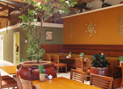
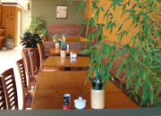
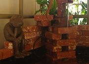
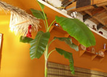
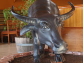

|
Nông Thôn is located in central El Cerrito, right at the corner of Central Ave and San Pablo Ave. Our grand opening was an outstanding success thanks to the generosity of the people of El Cerrito. Although we'be been in business for over 20 years in Oakland, we always strive to improve and continue delivering authentic and delicious Vietnamese food with excellent dining service. Nông Thôn has the countryside farm as the theme. The majority of Vietnam still farms and ranches. Over thousand of years we have been taking advantage of nature providing our country with the most unique tropical herbs and spices no where else has. The food we serve is from the most common to the most exotic. Nông Thôn is a great addition of the City of El Cerrito. We provide great atmosphere suitable for a quick lunch, a romantic dinner, or even family eat out with children. Please visit our sister restaurant, Binh Minh Quan.

|